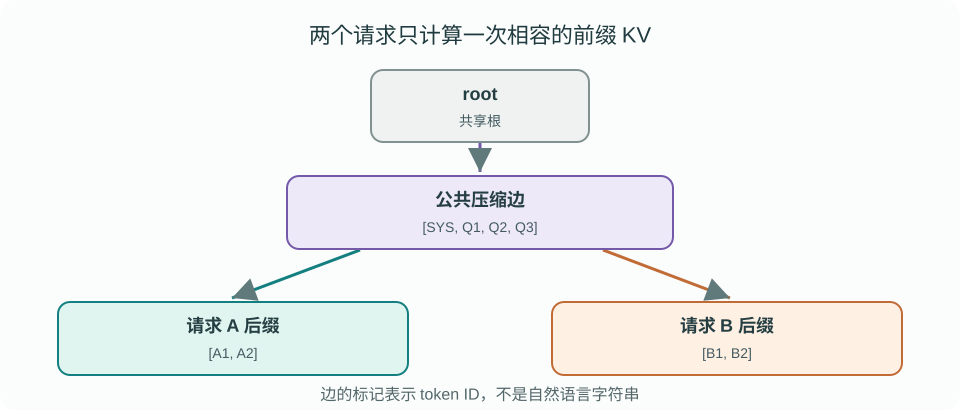
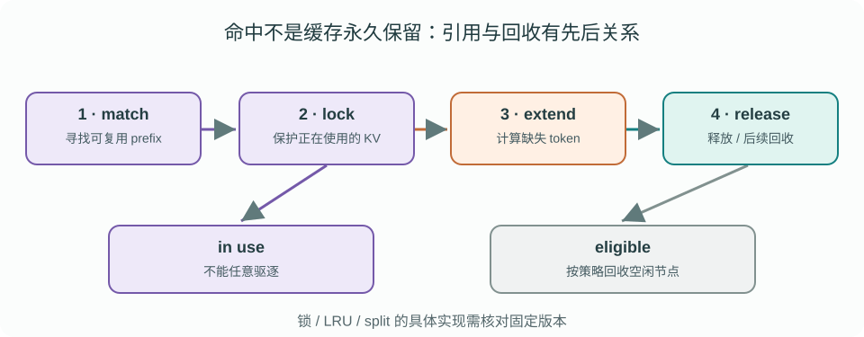

第 02 章 · 缓存系统
RadixAttention：从最长公共前缀到可回收的 KV 树
理解共享的是哪一段 token KV、怎样按树索引、什么条件下不能安全复用。
想象上千条 Agent 请求都以相同的系统指令和工具定义开头。模型并不需要因为它们来自不同 HTTP 请求，就重新计算所有相同的前缀 token。SGLang 的重要贡献之一，是把可复用的 prefix KV 放进可查询、可维护的树结构。
本章结束后，你应该能
- 手算两条 token ID 序列的最长公共前缀。
- 区分 radix tree 索引、KV pool 存储、page 对齐与 attention backend。
- 解释缓存命中、节点引用、路径分裂与淘汰的必要约束。
1. 先手算两个请求：哪里真正相同？
定义请求 A 的 token ID 为 [11,12,13,91,92]，请求 B 为 [11,12,13,73,74]。它们共享前三个 token，后面各走自己的路径。历史前三个 token 的 K/V 可以在模型状态相容时复用；A 的后缀绝不应被拿给 B 当作已有计算结果。
A = [11, 12, 13, 91, 92]
B = [11, 12, 13, 73, 74]
LCP(A, B) = 3
A 的缺失后缀 = [91,92]
B 的缺失后缀 = [73,74]注意必须比较经过 tokenizer 之后的 token ID。人类看到的自然语言相似句子不等于 token 序列具有相同的 prefix。
2. 为什么需要 Radix Tree，而不是把每个 Prompt 各存一份？
Radix Tree 是路径压缩的前缀树：连续的一段无分叉 token ID 可以放进同一条边；遇到不同后缀才分裂。这样不仅保存缓存的索引，还表示了多个请求如何共享同一段已计算的 KV。

论文中的 RadixAttention 强调对多次模型调用的前缀缓存复用。这与为注意力分数计算实现高性能 CUDA kernel 是两个不同层次；RadixAttention 不是一个特指的 GPU attention kernel 名称。详见 原论文 和 radix_cache.py。
3. 匹配长度与分页对齐：两种边界不要混淆
对 token ID 序列 a 和 b，最长公共前缀 LCP 是首个不相等位置之前的元素个数。若某实现只允许按 page 大小 P 复用完整页，则可复用长度不得超过向下对齐的公共长度。
例如 LCP=7 且 P=4，上述完整页教学策略只能命中 4 个 token。具体页大小、hash 或 radix 的索引方式不能从这个式子反推；应查看对应版本中 RadixKey.page_aligned() 和 match() 的行为。原始论文的逻辑概念和近期实现的对齐细节必须分开。
固定版本 Req.init_next_round_input / _compute_max_prefix_len 默认将匹配上限设为 input_len−1，再考虑 logprob 等条件，以保留产生下一 token 的计算。完整逻辑命中5、P=1 的普通生成例最多跳过4个输入位置；P=4 时仍为4。只缓存 KV 不代表已缓存最后位置 logits。
4. 命中、引用锁、树分裂、回收怎么串起来？
一个在用的前缀节点通常需要防止在仍被请求使用时被释放；新后缀需要新的可用 KV 空间；请求完成后，再考虑哪些空闲树分支适合回收。树的压缩与路径 split 关系到多个请求怎样共享节点引用。

若显存不足，复用收益仍会与缓存容量和逐出行为竞争。不能把“有 Radix Tree”直接推成“所有重复前缀永远命中”；长上下文、不同模型和访问模式会改变缓存命中率。
5. 多租户与模型边界：相同文本不等于安全共享
上游源码的 RadixKey 包含 token_ids、extra_key、cache_salt 等字段，并在匹配操作中核对兼容性。这揭示缓存键不只是可见 prompt 文本。
对不同模型权重、tokenizer、LoRA 适配器或带租户隔离要求的部署，不得凭“文本一致”就认定 KV 可共用。即使应用层实现了盐值或 namespace，也不能把该机制当作完整多租户安全隔离。
6. 交互实验：选取三种候选请求
固定已缓存序列 [11,12,13,91,92]，选择新请求观察 LCP。这里比较的是整数 token ID，未调用任何 GPU 内核。
选择候选 token ID 序列
完整一致：候选 [11,12,13,91,92]；LCP = 5，这是逻辑 LCP；实际跳过的 Prefill 长度仍受 page alignment、状态与请求侧上限限制。
在中间分叉：候选 [11,12,13,73]；LCP = 3，前三个相同，分叉位置后必须计算自己的后缀。
首 token 不同：候选 [42,12,13]；LCP = 0，没有公共前缀可复用。
更严谨的 CPU-only 实验在 examples/prefix_match.py，包含空前缀、partial match、page alignment 和 namespace 约束。
7. 什么时候 Radix 缓存并不占优？
高度随机、几乎无公共开头的请求会降低 prefix hit ratio；不合适的模型/适配器隔离键将阻止复用；内存压力下缓存复用与新请求 KV 分配相互竞争。缓存可以节省部分 Prefill 计算，但不会自动消除 Decode 计算、采样或网络开销。
误区核对：Radix Cache 不负责存储模型参数，树的 token 路径不等于 KV 物理存储布局。做实验时需分别测 cold cache 与 warm cache，不能把冷请求与热请求的性能差异未经控制地归因于调度器。
参考资料与版本边界
论文论述属于 2024 年原始设计；源码链接固定到 SGLang 0a8693fbe3a2（2026-11-23 检索），不自动代表其他发行版。本文没有宣称完成上游 GPU 级基准复现。